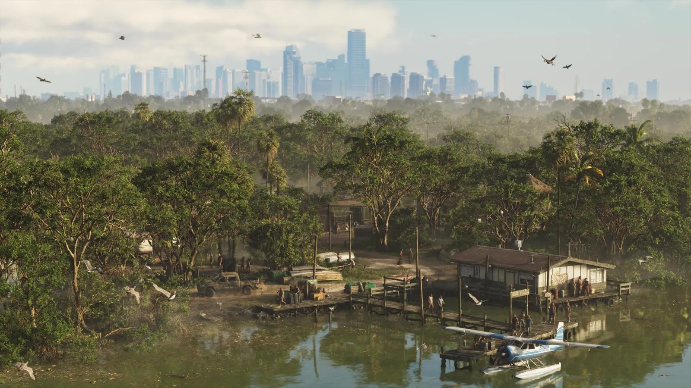
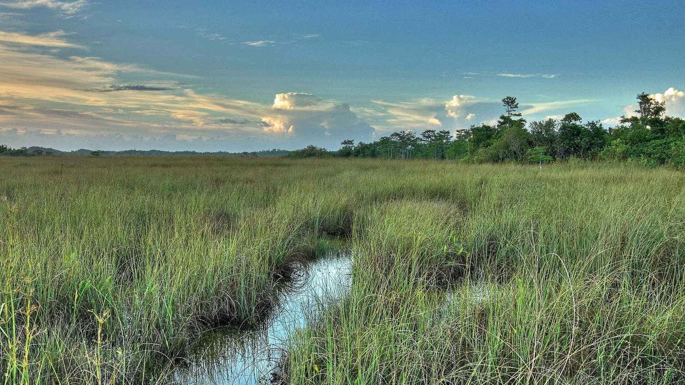
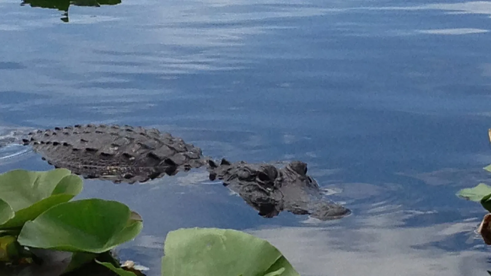

Grassrivers и Эверглейдс
Опубликовано:
Болота, аллигаторы и аэроглиссеры — это Эверглейдс. А название региона почти дословно повторяет знаменитое прозвище болот.


- Прототип — Эверглейдс, огромные болота на юге Флориды.
- Прозвище Эверглейдс — «Травяная река» (River of Grass).
- Аллигаторы и аэроглиссеры есть и там, и там.
- Национальный парк Эверглейдс открыт в 1947 году.
Что в игре
Grassrivers — болотистый регион Леониды: заросли, протоки, аллигаторы, аэроглиссеры и полиция, которая гоняется за браконьерами. На одном из официальных кадров пикап везёт аллигаторов в прицепе-клетке.

Что в реальности
Эверглейдс — это не болото в привычном смысле, а очень медленная и мелкая река шириной в десятки километров, текущая через заросли меч-травы. В 1947 году журналистка Марджори Стоунман Дуглас назвала свою книгу о ней «Эверглейдс: травяная река» (The Everglades: River of Grass), и прозвище прижилось. В том же 1947 году открылся национальный парк.
Посмотрите на название региона: Grass + Rivers — «травяные реки». Rockstar почти дословно перевернула знаменитое River of Grass. Официально студия это не объясняла, но совпадение слишком точное, чтобы быть случайным. Это наша трактовка.

Кроме аллигаторов, Эверглейдс знаменит бирманскими питонами: их завозили как домашних питомцев, они оказались на воле и расплодились. Штат даже проводит ежегодные соревнования по их отлову. Будут ли питоны в Grassrivers, Rockstar пока не говорила.
Совпадает и отличается
| Эверглейдс | Grassrivers | |
|---|---|---|
| Травяная река и протоки | Да | 🟢 На кадрах |
| Аллигаторы | Да | 🟢 Есть |
| Аэроглиссеры | Главный транспорт туристов | 🟢 Есть |
| Название | River of Grass | 🟡 Grassrivers — почти цитата |
Как устроен аэроглиссер и кто его придумал — в сравнении «Аэроглиссер».
Источники: Rockstar Games (официальные кадры региона); National Park Service — Everglades National Park; Marjory Stoneman Douglas, «The Everglades: River of Grass» (1947).
Реальные фото: Фото: Jacklee, CC BY-SA 4.0 · Wikimedia Commons; Фото: evergladesnps, Public domain · Wikimedia Commons. Кадры игры: Rockstar Games.
Каждый день — одно сравнение: кадр игры рядом с реальным фото. Подписывайтесь:
YouTubeInstagramTikTok
 vs
vs
 vs
vs
 vs
vs